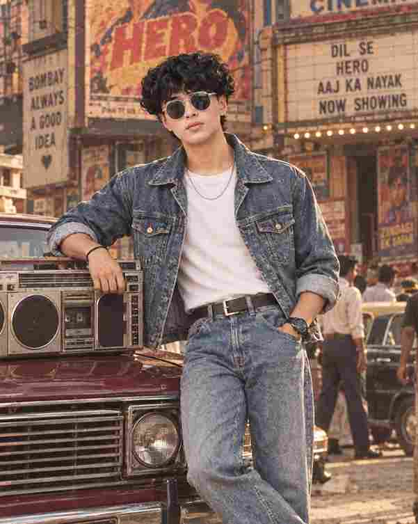

The Viral 1980s Look Reels VN Code Template is a perfect way to turn your normal photos into a stylish retro Bollywood-inspired video. The 1980s aesthetic is currently popular for its vintage fashion, classic cars, warm colors, cinematic lighting, and nostalgic film effects. With this VN Code template, you can quickly create an eye-catching 1980s look reel without spending hours editing. Just prepare your AI-generated retro photo, import it into VN Video Editor, apply the template, and create your own trending vintage reel.
Create Your 1980s Retro Look Photo
Before using the VN Code, the first step is to create a high-quality 1980s-style photo. You can upload your photo to ChatGPT or another AI image generator and use a detailed retro prompt to transform your appearance while keeping your facial identity natural and recognizable. Try a classic Indian retro fashion style with vintage sunglasses, patterned shirts, high-waisted jeans, classic cars, old heritage buildings, palm trees, warm sunlight, and an authentic 35mm film photography effect. A vertical 9:16 image works best for Instagram Reels, YouTube Shorts, and other short-video platforms.
Want more awesome prompts?
Join our community and get the latest viral prompts daily.
Follow on Instagram
Save or Screenshot the VN Code ⤵️
How to Use the Viral 1980s Look VN Code
Once your AI-generated image is ready, open the VN Video Editor app on your phone and prepare the 1980s Look VN Code Template. Take a screenshot of the VN Code or save the code image to your device. Open VN and use the QR or template scanning option to scan the code. After the template loads, select your AI-generated 1980s retro photo from your gallery and allow VN to automatically apply the preset transitions, effects, timing, and cinematic movements. This makes the editing process much faster and easier, even for beginners.
Add the Perfect 1980s Music
Music plays an important role in making a retro reel feel authentic and attractive. For your Viral 1980s Look Reel, you can choose a classic Bollywood song that matches the nostalgic mood and sync the VN template transitions with the music beats. Some of the best 80s songs for this trend include Meri Umar Ke Naujawano from Karz (1980), Mere Rang Mein Rangne Wali from Maine Pyar Kiya (1989), Saagar Kinare Dil Yeh Pukare from Saagar (1985), Dil Chura Liya from Qayamat Se Qayamat Tak (1988), and De De Pyaar De from Sharaabi (1984). Choosing the right song along with your AI-generated retro photo, vintage effects, and smooth VN transitions can make your final 1980s Look Reel feel more cinematic, nostalgic, and engaging.
Best Photo Ideas for the 1980s Look Trend
You can experiment with several different concepts using the same VN Code template. Try a retro hero standing beside a classic luxury car, a stylish couple walking through an old Indian street, a vintage Bollywood-inspired portrait, a retro college look, a classic scooter scene, or a cinematic heritage mansion portrait. Men can try patterned shirts, leather belts, aviator or rectangular sunglasses, vintage watches, and relaxed-fit jeans, while women can experiment with colorful 1980s dresses, oversized shirts, traditional outfits, bold earrings, and retro hairstyles.
Make Your 1980s Reel More Viral
For better reach, keep your reel short, visually interesting, and easy to watch repeatedly. Start with your best-looking retro photo and use smooth transitions instead of unnecessary effects. Add a simple text overlay such as “POV: You Were Born in the 1980s” or “Back to the 80s ” to create curiosity. You can also use keywords such as 1980s Look, 80s Photo Editing, Retro Bollywood Look, Vintage AI Photo, Retro Reels, and VN Code Template in your caption and description. A strong thumbnail or opening frame can also help attract viewers.
Conclusion
The Viral 1980s Look Reels VN Code Template makes it simple to create a nostalgic and cinematic retro video from a single photo. By combining an AI-generated 1980s portrait with vintage fashion, classic cars, warm cinematic colors, film grain, retro music, and smooth VN transitions, you can create a reel that looks stylish and professional. Create your retro photo, save or screenshot the VN Code, scan it in VN, add your image, choose suitable music, and export your finished 1980s Look Reel in 9:16 format for Instagram Reels, YouTube Shorts, and other social media platforms.